26/11/2026 · le coin du 1er en station de service (A), et les six endroits de tes captures
Tu as choisi la station de service pour le coin du 1er. Voici les six endroits de tes captures,
dans leur ordre, chacun avant et après.
1 · La tablette du balcon et le garde-corps
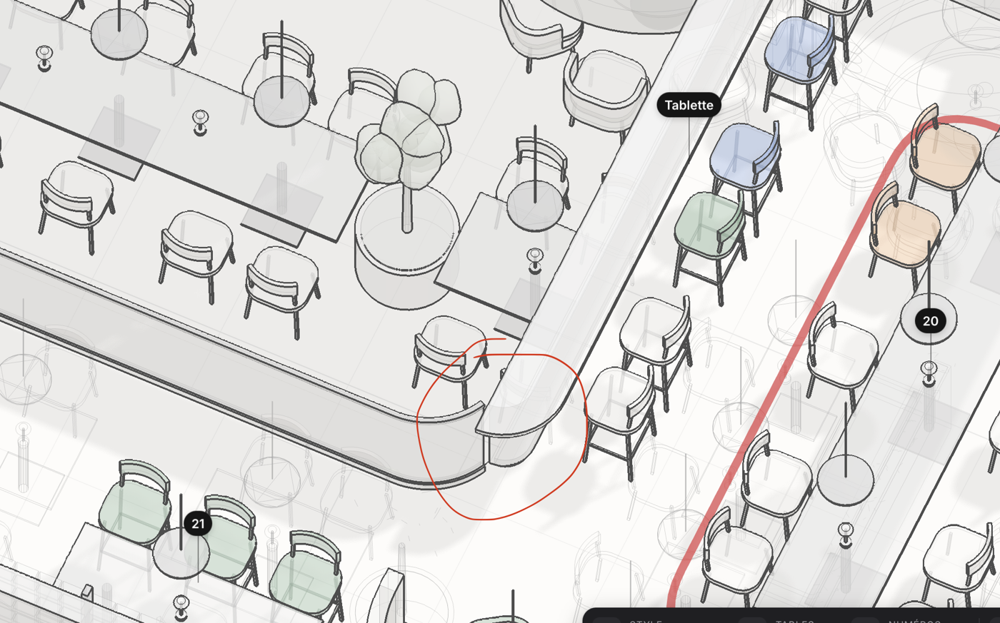
Avant (ta capture)
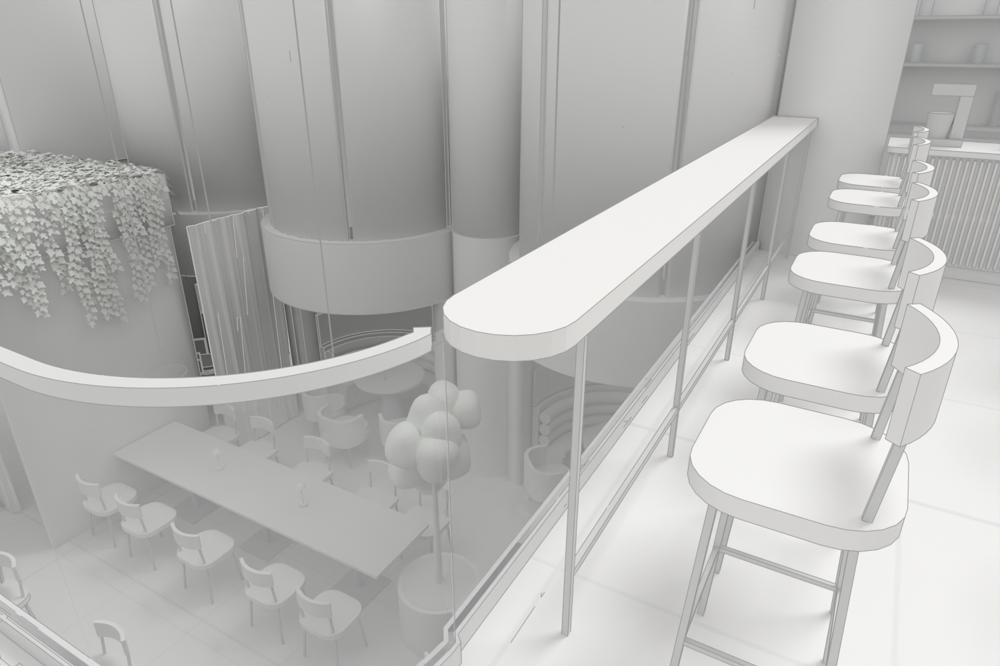
Après
Ce qui n'allait pas. Le corps plein de la tablette s'arrêtait net contre le verre : deux hauteurs et deux matières côte à côte.
Ce que j'ai fait. Le garde-corps en verre court maintenant tout le long du vide, sous la tablette. La tablette en chêne (30 cm de profondeur, bout arrondi) en devient le chapeau, de 1,02 à 1,08 m. Côté salle, des pieds fins en acier la portent, avec un repose-pieds pour les tabourets. La main courante prend le relais là où la tablette s'arrête.
2 · Les lumières au-dessus du vide
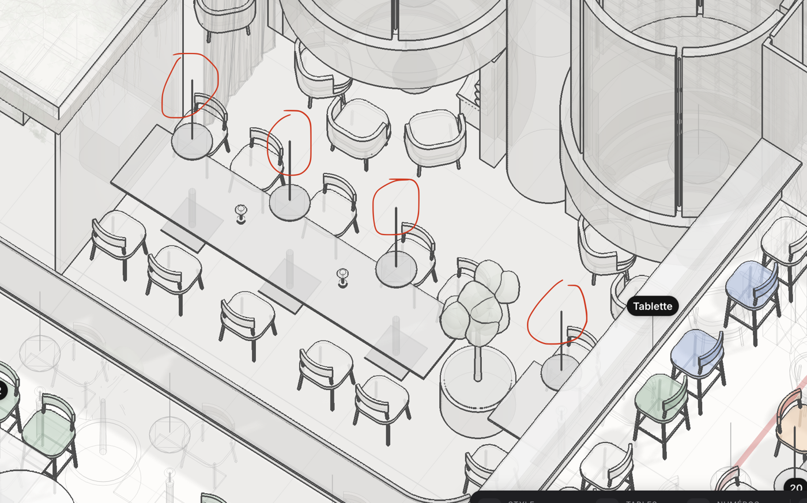
Avant (ta capture)
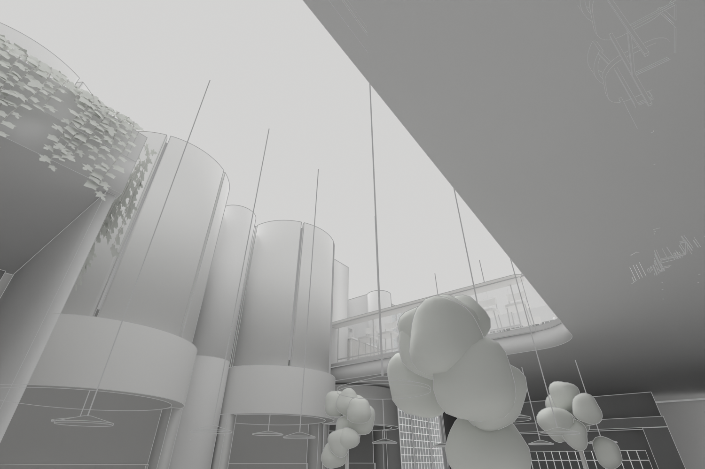
Après
Ce qui n'allait pas. Les suspensions des tables du bas, sous le vide, pendaient d'un fil coupé au niveau de la dalle.
Ce que j'ai fait. Elles descendent maintenant du plafond du 1er au bout de longs câbles, à travers la double hauteur. Sur la carte, comme les murs, les câbles sont pleins jusqu'à 1,20 m au-dessus du plancher du 1er et transparents au-dessus.
3 · Le bar omakase et sa cuisine
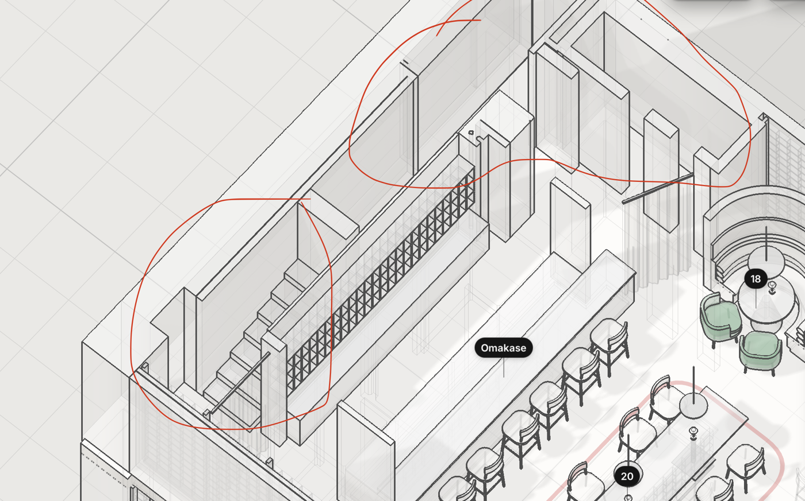
Avant (ta capture)
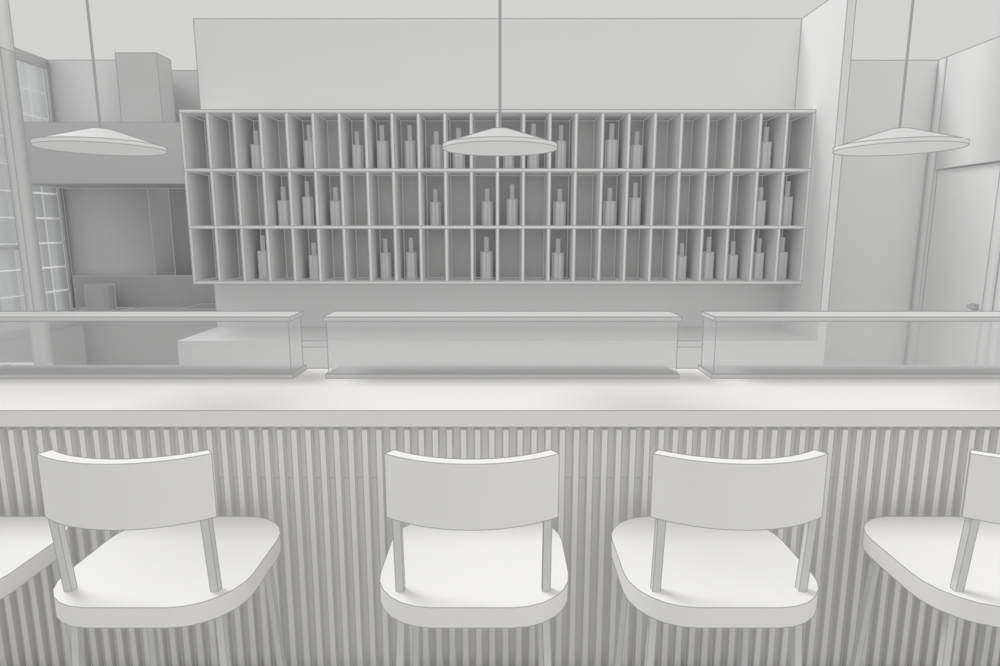
Après
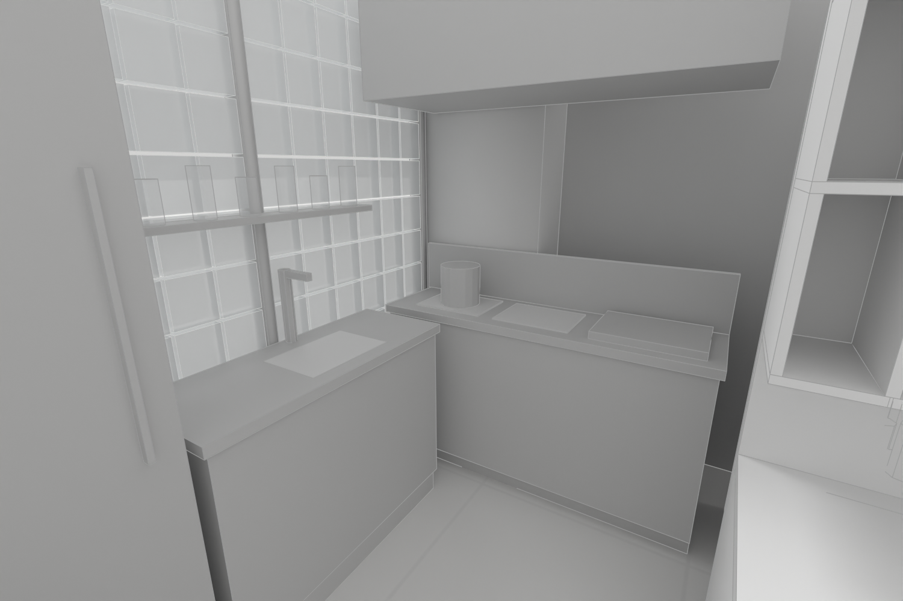
Après
Ce qui n'allait pas. L'escalier était déjà retiré depuis midi : ta capture venait de l'ancien modèle, gardé en cache par le navigateur (la carte recharge maintenant toujours ses modèles). Autour du bar, le plan laissait huit petits murs sans usage, et des doublures dans le mur du fond.
Ce que j'ai fait. Les petits murs sont retirés. Le bar a un plateau en hinoki et un devant en lattes de chêne verticales, un repose-pieds en acier, trois vitrines à neta côté chef, des bouteilles de saké dans la moitié des casiers et trois suspensions au-dessus du comptoir. La cuisine est au bout du bar, côté façade : la ligne de cuisson sous sa hotte (deux plaques à induction, une plancha), le plan de préparation et son évier le long des pavés de verre, une armoire froide. Elle est ouverte sur l'allée du chef et sur la réserve, et fermée côté salle par une cloison vitrée. La réserve passe derrière le fond du bar, sur toute sa longueur. Les toilettes ont maintenant leur porte, derrière le rideau du passage.
4 · Le comptoir du labo
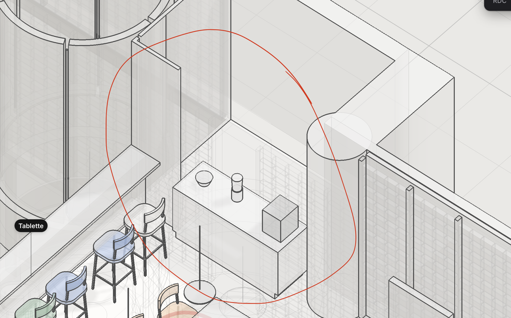
Avant (ta capture)
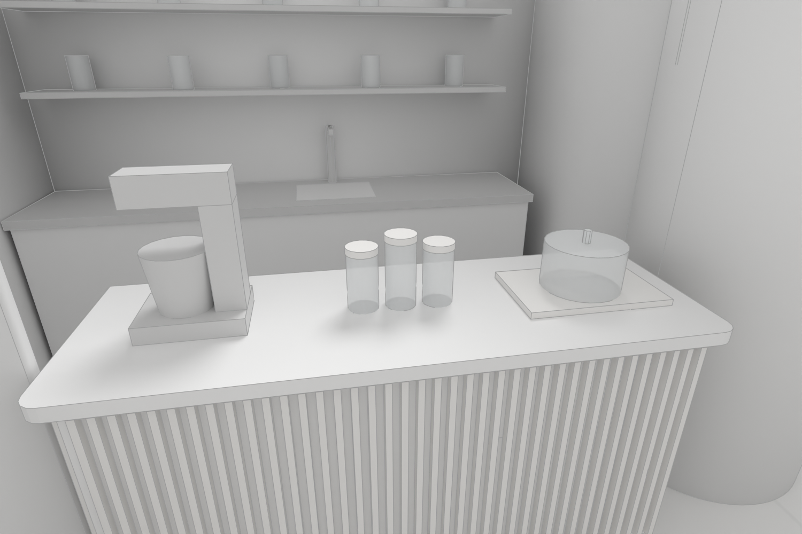
Après
Ce qui n'allait pas. Un simple bloc, trois objets dessus.
Ce que j'ai fait. Un meuble en chêne à lattes verticales sur un socle en retrait, sous un plateau de pierre arrondi côté salle. Dessus, une cloche en verre sur une planche, trois bocaux de fermentation et un batteur. Derrière, le long du mur, le plan de travail du labo avec son évier et deux étagères ouvertes chargées de bocaux.
5 · Le jardin sec sous l'escalier
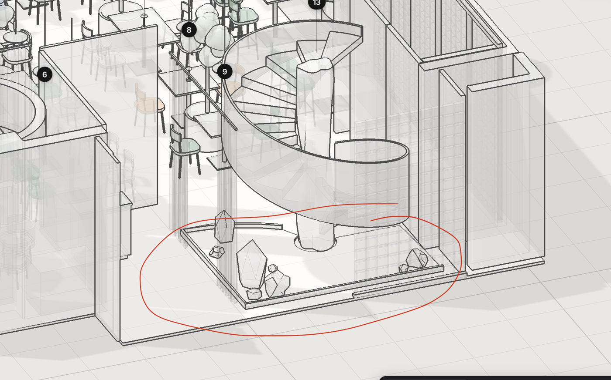
Avant (ta capture)
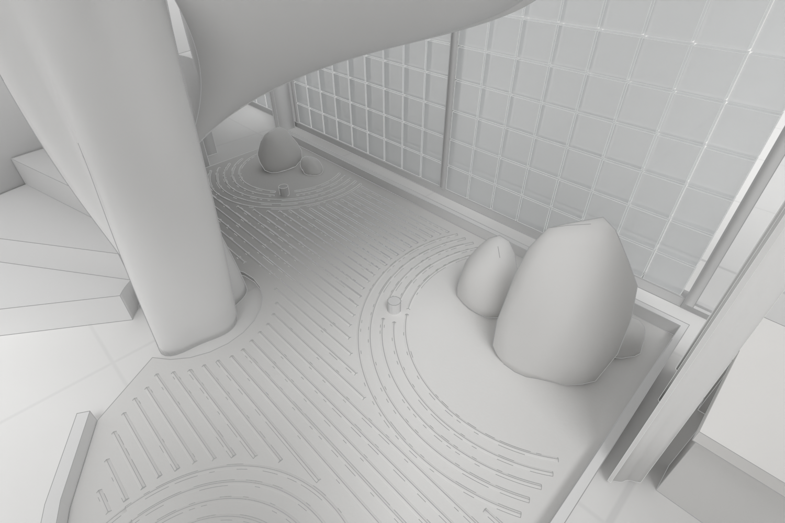
Après
Ce qui n'allait pas. Un sol de gravier plat, des roches taillées à facettes.
Ce que j'ai fait. Le gravier est ratissé, en lignes droites et en cercles autour des groupes de pierres. Les pierres sont refaites, polies par l'eau : une grande pierre dressée avec deux plus basses, une paire, et une pierre seule sous l'escalier. Deux petits projecteurs posés dans le gravier les éclairent par en dessous.
6 · L'accueil du rez-de-chaussée
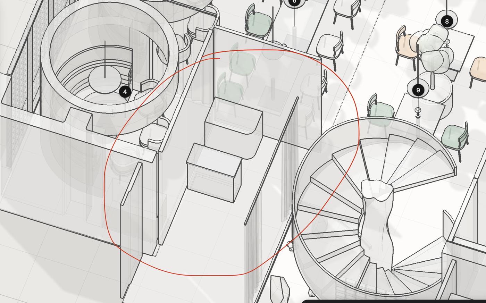
Avant (ta capture)
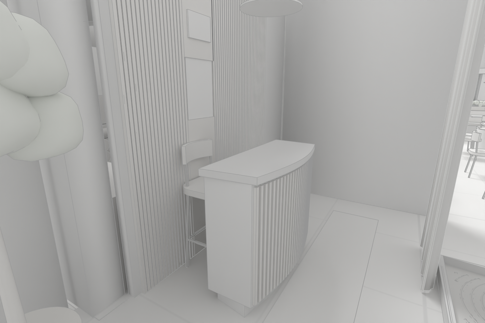
Après
Ce qui n'allait pas. Une boîte en guise de bureau et une console, dans un couloir vide.
Ce que j'ai fait. Le bureau d'accueil est contre le mur : son devant forme un léger arc en lattes de chêne, sous un plateau de pierre à 1,05 m, avec un tabouret haut et une suspension. Derrière, un panneau de tasseaux de chêne porte une niche éclairée et une plaque en laiton. Il y a aussi un banc en chêne sur deux blocs de pierre près du rideau, un tapis de la porte à la salle, et un olivier dans un pot de pierre près de l'entrée.
Sur la carte
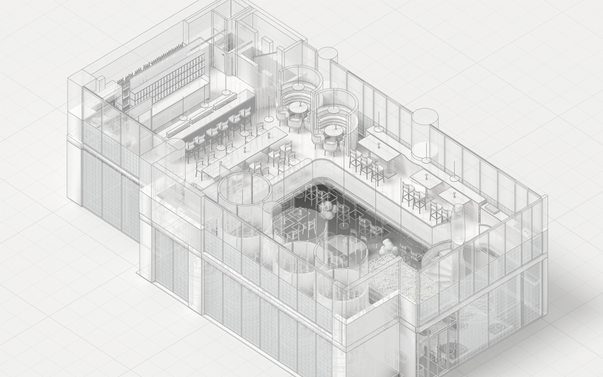
Le 1er, sur le rez-de-chaussée
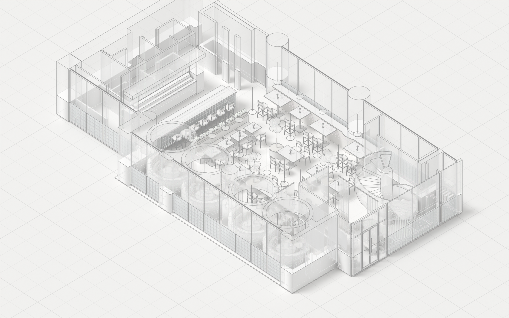
Le rez-de-chaussée seul
Questions
Ces six reprises te vont-elles ?
Y a-t-il d'autres endroits à reprendre ?
Ensuite : je refais les plans des deux étages d'après le modèle, et je refais les captures de la carte.
Rappel : le lien et la licence du modèle « ivy-for-walls », pour le créditer.